One shared product core
Routes serve the Flutter app, React admin dashboard, and venue subscription portal.
CASE FILE 01 · CARDYIQ · SPORTSTECH
Recovered · live · rebuilt in productionBrowse the whole build (19 screens) ↘
The product was live. It was not ready.
Cardyiq is a sports and fitness network in Iraq. I was asked to give some "technical advice" a few days after launch. The app was live, people were already using it and almost every part underneath needed work.
I cannot publish the operational details, but I can show what was wrong, what I changed and what happened after.
USER ──▶ MOBILE APP (Flutter) ──────────────┐ OWNER ──▶ DASHBOARD (React · Arabic-first) ──┤ ▼ API (Bun · Express · TypeScript) │ ▼ PostgreSQL primary ──▶ read replica + backups (the recovery path) PAYMENTS provider A ─┐ provider B ─┴─▶ webhook reconciliation │ ▼ initiated → pending → confirmed │ ├──▶ failed (explicit state, never guessed) └──▶ retry (idempotent, no double charge) DELIVERY git push ─▶ GitHub Actions ─▶ Docker build ─▶ Dokploy ─▶ zero-downtime deploy
Entry passes put a ceiling on the product. Points and subscriptions opened it to more sports and more kinds of venues. Without that change, the technical rebuild would not matter.
There was no downtime window. I moved the hosting, changed the database and rebuilt features in small steps under live traffic.
Both providers sit behind one idempotent, webhook-reconciled layer. The app does not need to know which provider is handling the payment.
The backups and read replica existed before the incident. That was the reason we recovered without losing a record.
I built a team of 10 and gave people enough context and ownership to move without waiting for me.
The 99.9% uptime does not mean nothing went wrong. We had a production data incident and recovered with zero records lost. The next section explains it.
A data-loss incident was detected in production. Here is the public version of what happened.
Monitoring showed something was wrong in the primary database. The app stayed online while we checked the damage.
The read replica was intact and consistent.
We compared the backup timeline with the replica and confirmed exactly what was affected.
The replica became the source of truth. The backups were used to verify it.
We checked the data against both sources before returning to normal operation.
The recovery setup worked exactly when we needed it.
The incident was bad. The good part was that the recovery path already existed and we did not lose anyone's data.
Explore each part individually. These are original interfaces from the project itself; capture context is noted below.
12 original iOS captures from August 2026: discovery, points, purchases, QR entry, and failure states.
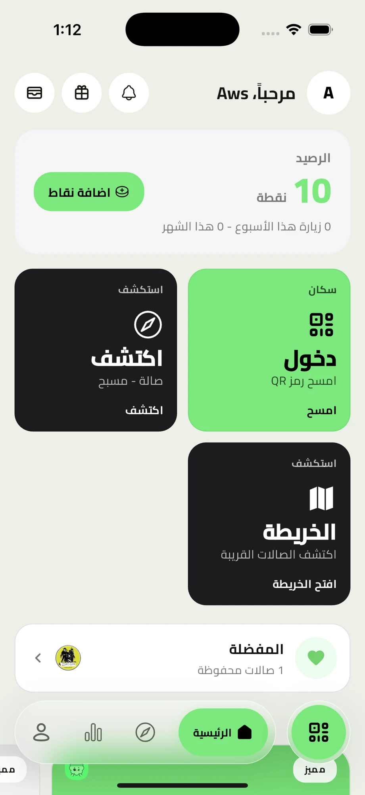
Points, discovery, and check-in share one starting point.
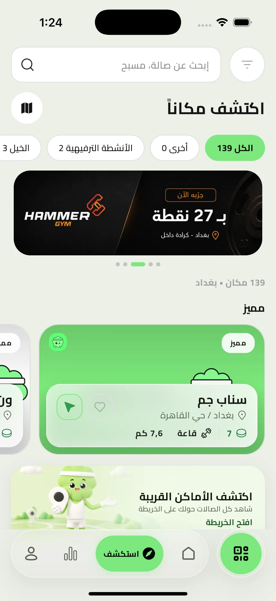
Venue discovery connects the membership model to a real place.
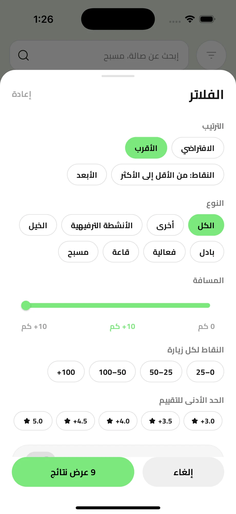
Activity, audience, price, and rating belong in the same filtering flow.
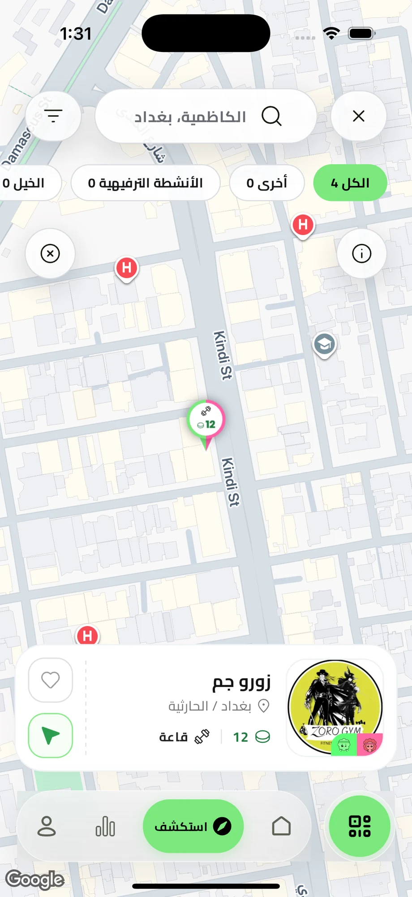
The selected pin exposes the venue and its entry cost before a visit.
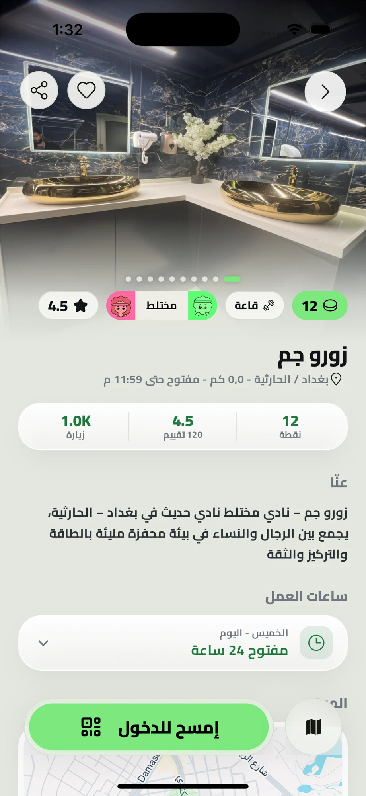
Photos, location, ratings, hours, and entry points come together on the venue page.
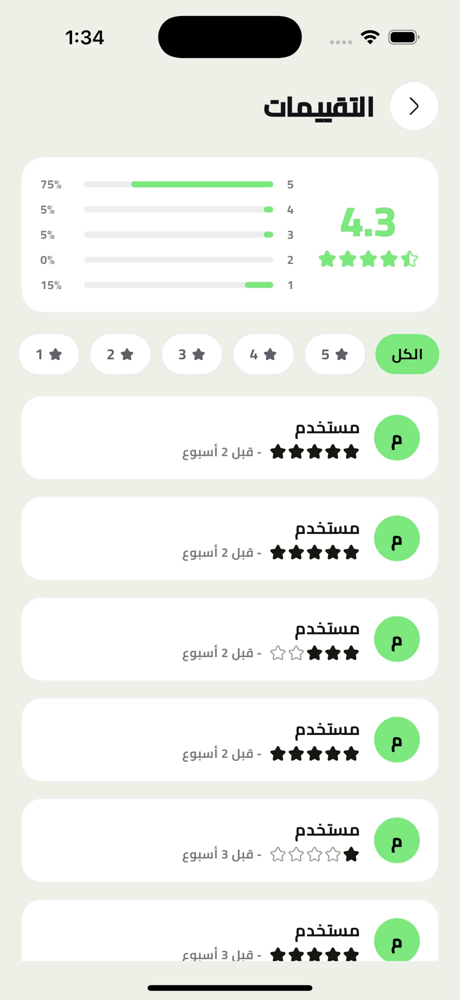
The review interface makes ratings readable alongside member feedback.
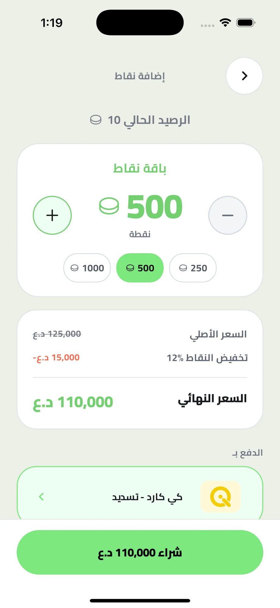
The points selector keeps the amount, total, and payment action visible.
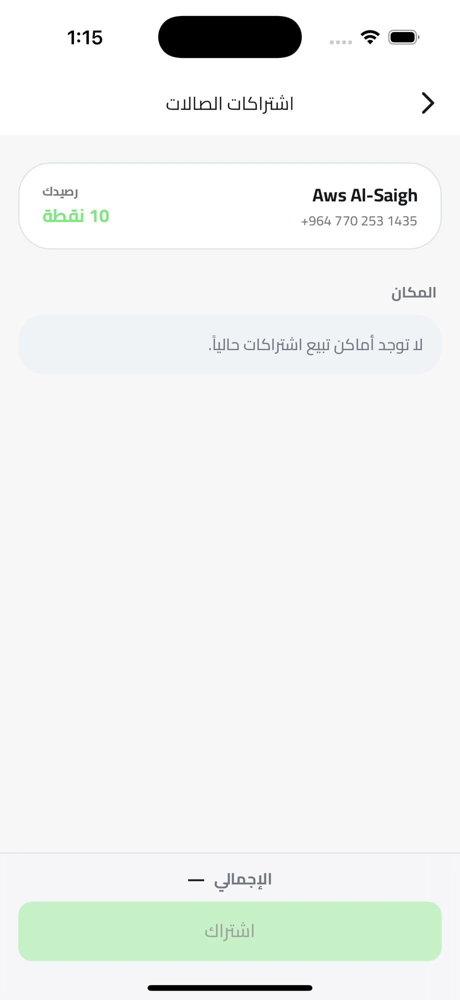
The venue subscription flow complements points-based visits.
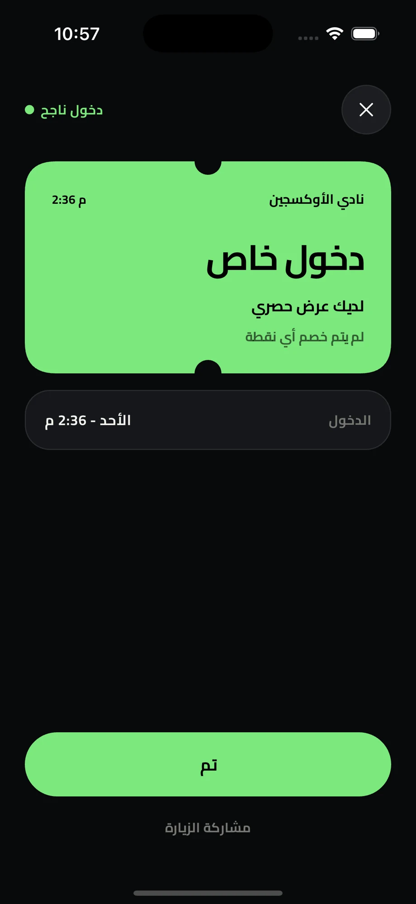
The QR flow shows a confirmed entry instead of making a member guess.
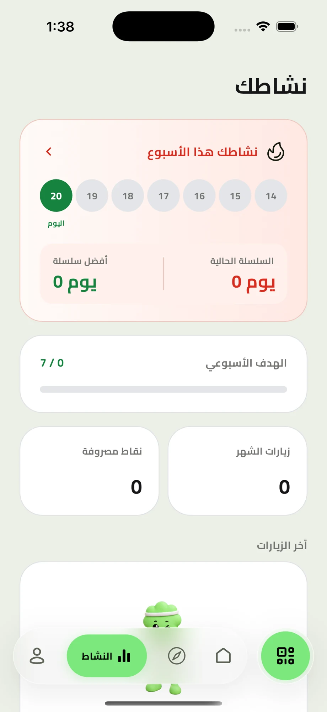
Activity history and progress give members a reason to return.
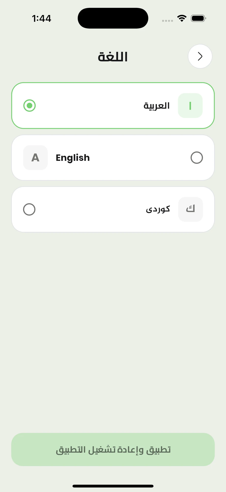
Arabic, English, and Kurdish are part of the real app experience.
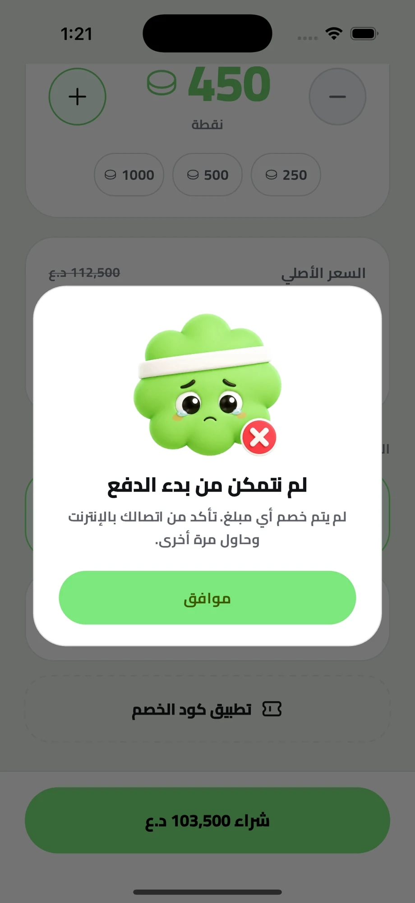
An explicit error and a next action keep a failed attempt understandable.
Member and venue-partner pages from the original Astro site. Marketing figures are as displayed by that source at capture time.
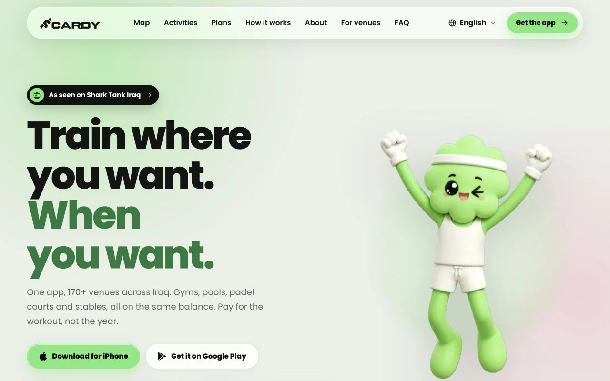
The member landing introduces the membership model with the original Cardy mascot.
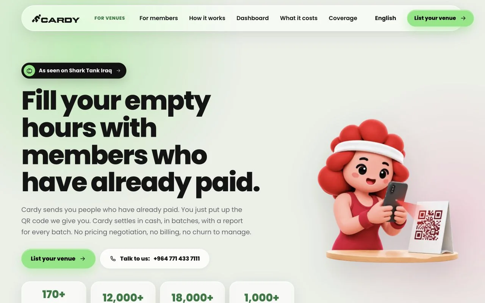
A separate landing explains the venue partnership and its commercial offer.
The real Arabic React dashboard, rendered locally with fictional API records. No production accounts or live actions.
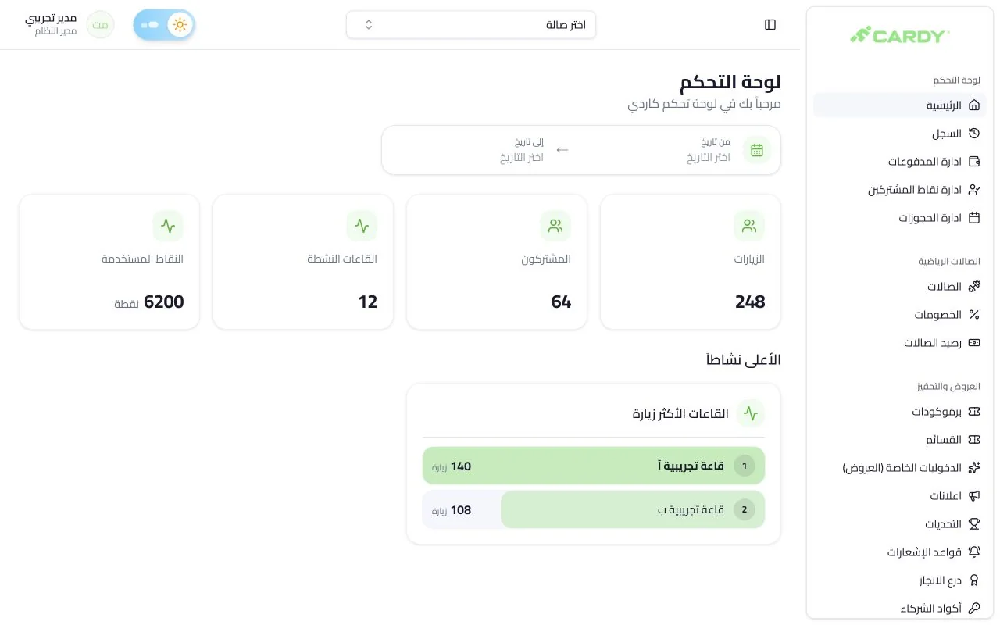
The real dashboard layout with fictional visit, membership, venue, and points totals.
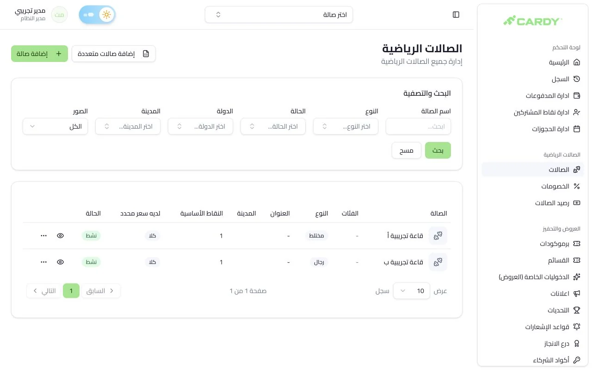
Venue search, filters, and actions, shown with two fictional venues.
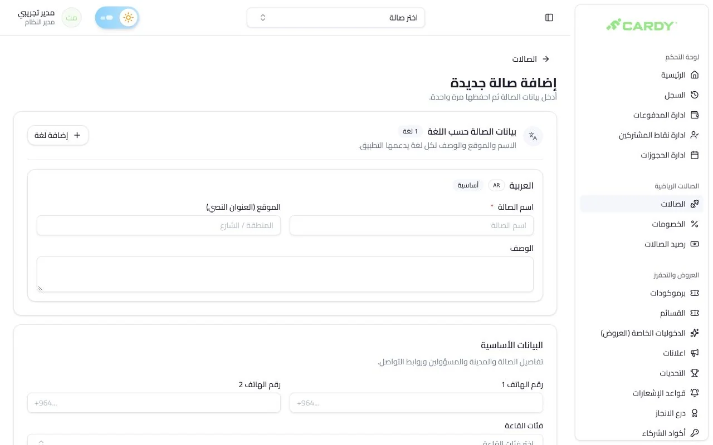
The venue form brings identity, location, and operating details into one workflow.
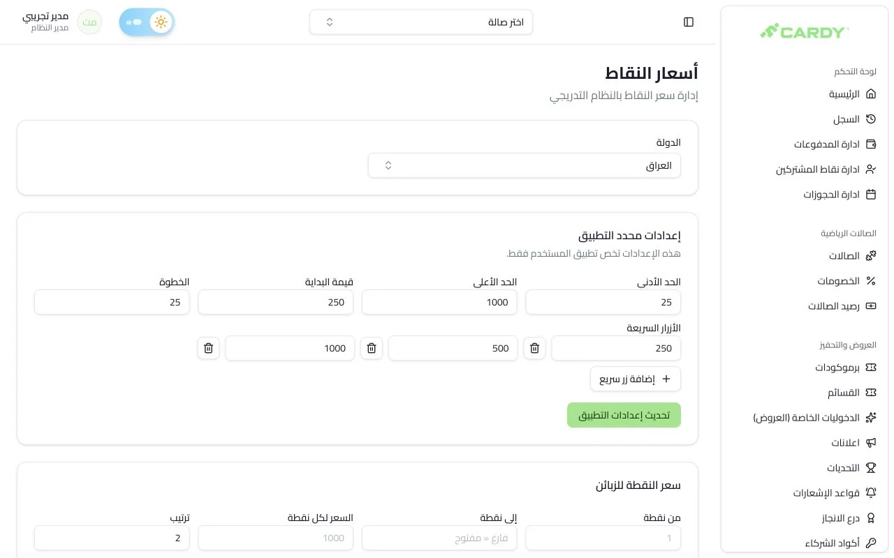
The pricing interface exposes tiers, purchase limits, and quick-add options; all values are demo data.
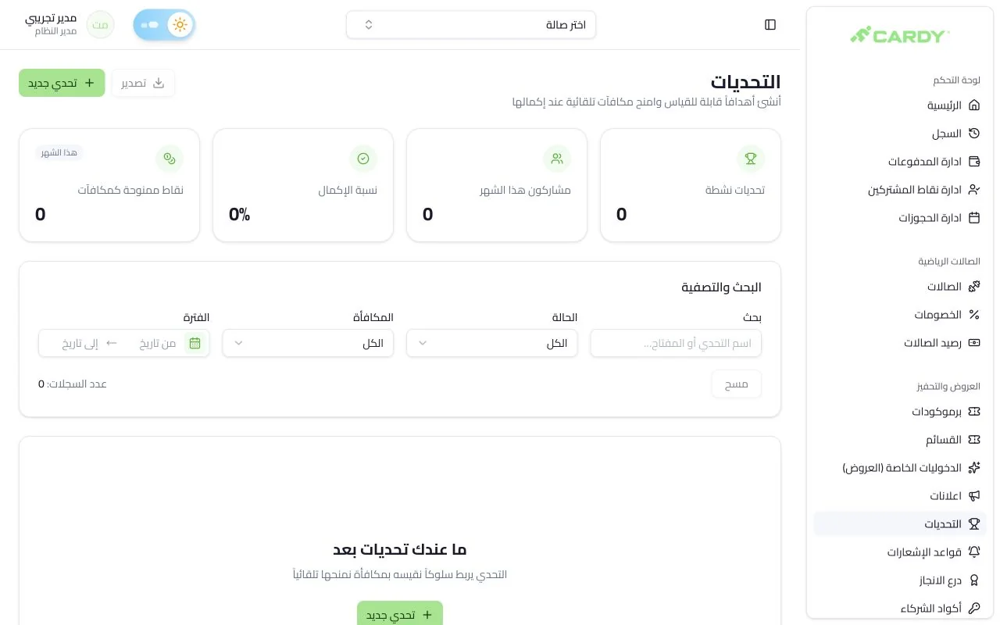
The original challenge management view, captured with an empty demo collection.
The current backend is Bun, Express 5, and TypeScript with Prisma and PostgreSQL/PostGIS. The earlier Laravel/MySQL system belongs to the recovery story above.
Routes serve the Flutter app, React admin dashboard, and venue subscription portal.
Payment rechecks, notifications, report PDFs, and rules-engine outboxes run in separate consumers.
Reminders, booking expiry, and membership lifecycle jobs run under a leader lock.
This Redis Lua script atomically claims a request. The surrounding middleware checks the request hash, replays successful responses, and refuses guarded requests if the claim store is unavailable.
src/middleware/idempotencyKey.ts · CLAIM_SCRIPT
local key = KEYS[1]
if redis.call('EXISTS', key) == 0 then
redis.call('HSET', key, 'st', 'p', 'h', ARGV[1], 'k', ARGV[2], 'at', ARGV[3])
redis.call('PEXPIRE', key, ARGV[4])
return {'claimed'}
end
local v = redis.call('HMGET', key, 'st', 'h', 'code', 'body', 'at')
return {'existing', v[1] or '', v[2] or '', v[3] or '', v[4] or '', v[5] or ''}The code was only part of the problem. Operations and the business model needed work too.
I would build the payment layer and observability in week one, not month two. I would also push the business-model conversation earlier. The code was not the hardest part. Getting everyone to agree that entry passes were the ceiling took longer.